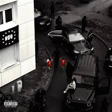

MAES
Maes de son vrai nom "Walid Georgey" est un rappeur franco-marocain âgé de 29 ans. Il commence a rapper en 2009 à l'âge de 14 ans avec ses amis mais sa carrière va réellement décoller en 2017 après sa sortie de prison, quand il sort sa première mixtape "Réelle vie".
Top titres
- Madrina
- Blanche
- Billets verts
Albums
- Réelle vie 2.0 (2018)
- Pure (2018)
- Les derniers salopards (2020)
- Réelle vie 3.0 (2021)
- Omerta (2023)
- En attendant LVC (2024)
- La vie continue (2024) 

Featurings
- Dybala (feat Jul)
- Distant (feat Ninho)
- Boston George (feat Lacrim)